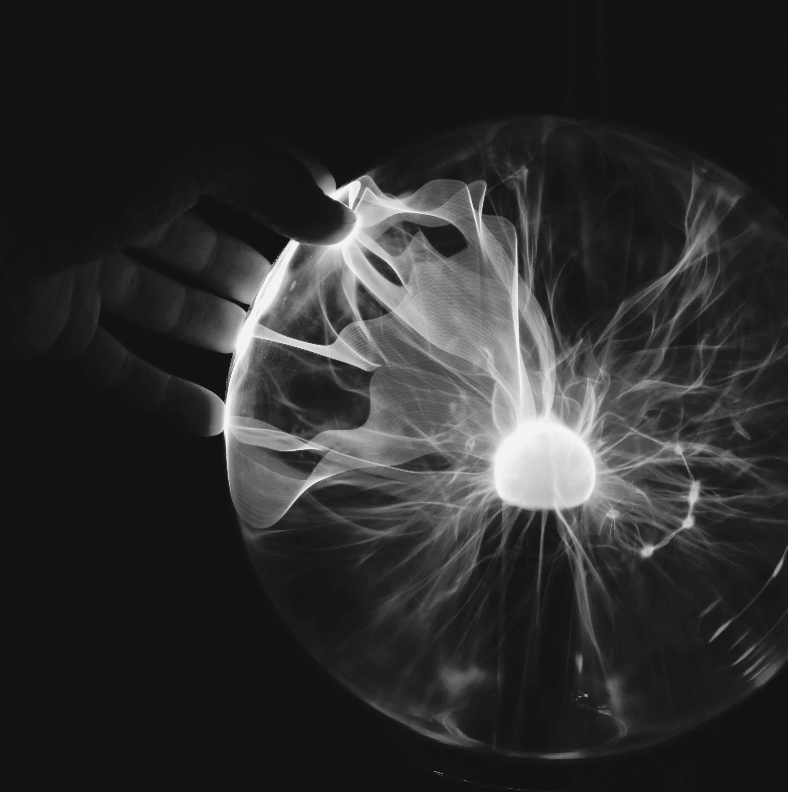

ARTE DEL MAÑANA
&
DISEÑO
Paper
Reseña Autor
Nacido en 1964, en Austria, Gerfried Stocker ha desarrollado su carrera artística impulsando lo que es el arte electrónico. Es director artístico de Ars Electrónica Center desde 1995, y co-director de Ars Electrónica Festival. Se define como artista mediático independiente hace más de 30 años, y es licenciado en materia técnica en el Institute for Telecommunication Engineering and Electronics de Graz. En 1991 fundó X-Space, un equipo de trabajo enfocado en la realización de proyectos interdisciplinares en áreas de artes electrónicas, interacción, robótica y telecomunicaciones, de este mismo grupo nació un proyecto de radio en vivo de escala mundial en 1994. Ha participado, también, en diferentes charlas de alcance global, además de ejercer como consultor de compañías internacionales en materia de creatividad y gestión de innovación.
Hasta la fecha ha publicado 4 libros oficiales:
Ars Electrónica ´98 INFOWAR (1998)
Ars Electrónica 2005. Hybrid: Living in Paradox
Ars Electrónica 2009 Human Nature (2009)
Infinite Screen (2020)
Resumen Artículo
El arte como lo conocíamos hasta hoy se está transformando, ya se habla del arte del futuro: el arte electrónico. Nuestra sociedad ha cambiado, los medios digitales se han apoderado de nuestro día a día y, sin ellos, la vida como la conocemos hoy nos sería imposible. Se espera algo diferente del arte en una época como esta, donde las plataformas entregan un espacio más amplio, que permite llegar a más gente sin la necesidad de encontrarse en un mismo espacio físico. Además, internet no solamente acelera los procesos de producción, sino también la adquisición de habilidades, conocimientos y aptitudes. Es necesario un arte que vaya de la mano con los cambios sociales y culturales de la época, hay que acercar el arte a la gente y los medios digitales son la forma más eficiente y actual de hacerlo. Es por esto que existen entidades como Ars Electrónica, una organización que está a cargo de un festival que refleja la gran evolución del arte digital para que pueda encontrarse a disposición de la gente, todo en un mismo lugar. Aun así, se deben pulir estos medios de mediación y difusión, se propone que el Festival Ars Electrónica debe abrir nuevas puertas en base a esta nueva forma de arte e iluminar el camino del arte del futuro.
Proyecto
Reseña Autor
Chris Sugrue es una artista, diseñadora y programadora estadounidense, nacida en 1978. Sus obras creativas se componen principalmente de instalaciones interactivas, performances audiovisuales y animaciones algorítmicas, experimentando con la tecnología de forma lúdica y curiosa, abarcando temas como la vida artificial, el seguimiento ocular y las ilusiones ópticas. Tiene una maestría en Bellas Artes en Diseño y Tecnología en la Escuela de Diseño Parsons, además de recibir una beca para estudiar un año en el Centro de Arte y Tecnología Eyebeam en Nueva York. Además de esto, ha realizado residencias artísticas en Barcelona, Madrid y Nueva York, compartido talleres de interactividad, programación visual y diseño en colaboración con instituciones como Medialab-Prado, Making and Make-Believe y la Escuela de Máquinas. Trabajó como ingeniera creativa en Ars Electrónica FutureLab, y fue invitada a programas de maestría por la universidad de Parsons París, donde actualmente imparte clases.
En lo que respecta a su trabajo, podemos encontrar diferentes proyectos que entran en la categoría de arte electrónico, como lo son “Memory of Form and Matter”, “Waves to Waves to Waves” o “Delicate Boundaries”. Así como también, desarrolló en 2009, “The EyeWriter”, una herramienta de bajo costo que permite dibujar con los ojos a través del seguimiento ocular, diseñado originalmente para un artista de graffiti en estado parapléjico, y que actualmente se encuentra en el MoMA.
Resumen Proyecto
Delicate Boundaries, de Chris Sugrue, en un proyecto creado en 2007, que consiste en una instalación interactiva, que busca representar cómo es que el mundo dentro de nuestros dispositivos digitales puede trasladarse al mundo físico. Se trata de una pantalla táctil donde se pueden observar pictogramas de bacterias recorriendo el espacio, las cuales, al tacto, salen de la pantalla y se trepan por el cuerpo de la audiencia, arrastrándose así de una persona a otra de manera extrañamente íntima. Este montaje recibió una mención de honor de los premios Vida Art and Artificial Life Awards y el primer premio del Share Festival.
Este proyecto plantea la duda sobre cuál es realmente el límite entre el mundo digital y el mundo real como lo conocemos. A medida que las tecnologías avanzan, nuestra cotidianidad va cambiando con ella, y la línea entre lo virtual y lo real se vuelve cada vez más borrosa.
Crítica
Lo principal a representar por Chris Sugrue en Delicate Boundaries es precisamente eso: los límites delicados. Se refiere a la frontera que existe entre lo que catalogamos como digital y lo que cabe dentro de la categoría de nuestra vida real. Hoy por hoy, sabemos que las tecnologías se han desarrollado hasta un nivel que les permite apoderarse de nuestras vidas en totalidad, los teléfonos celulares están por todas partes, así mismo los computadores, o incluso elementos menos tangibles como lo son las redes sociales. Estas últimas son las más prominentes, los usuarios se han vueltos adictos a ellas, lo que significa que un 59% de la población haga uso de estas plataformas, con un tiempo promedio de 2 horas y 29 minutos diarios (Ecommerce News, 2022), lo que se traduce en 38 días al años aproximadamente.
La tecnología ha marcado una nueva forma de relacionarnos, tanto con otros como con nosotros mismos, hemos reemplazado la palabra hablada por una abreviación en un mensaje de texto, como también hemos reemplazado los eternos álbumes de fotos impresas en papel por selfies que duran 24 hrs… hemos cambiado radicalmente nuestra manera de vivir y socializar. En adición, como se plantea en el paper “El Arte del Mañana”, además de acelerar los procesos de producción, estás tecnologías nos ayudan a agilizar procesos y ponen a nuestra disposición la posibilidad de adquirir nuevas capacidades y conocimientos con mayor facilidad, tenemos en la palma de nuestra manos más posibilidades que nunca antes visto, y llevamos en el bolsillo trasero de nuestro pantalón un aparato que nos abre la puerta a espacios digitales de capacidad prácticamente infinita.
Tomando todo lo anterior en cuenta, no es descabellado pensar que si nuestra forma de vida va cambiando en base al desarrollo tecnológico que experimentamos a nuestra alrededor, el arte también lo haga: a fin de cuentas el arte es una forma de expresión de lo que vivimos y sentimos.
Gerfried Stocker abarca este tema, el mundo como lo conocemos está cambiando y hoy hablamos del arte del futuro, un arte digital que se aprovecha de todos los avances y beneficios tecnológicos que se han logrado hasta ahora para romper con el esquema tradicional y desplegar esta nueva forma de expresión disfrutando de un soporte diferente, lo que se traduce en un olvido de los límites materiales que el trabajo análogo previamente suponía. Explica también, que la posibilidad de comunicarse en cualquier momento y en cualquier lugar ha cambiado las perspectivas de interacción social, y por ende, la artística. Se espera algo diferente del arte en una época como esta, se ha comenzado a apostar por obras que no se aprecien simplemente a través de la observación, sino que son, de por sí, instalaciones interactivas, involucran al espectador en su performance y necesitan de él para funcionar, así como lo hace Delicate Boundaries.
Uno de los beneficios que menciona el texto es el hecho de que con esta nueva tecnología ya no es necesario que los espectadores se reunan en un mismo espacio geográfico para disfrutar de las obras, pero Chris Sugrue nos demuestra todo lo contrario, el arte electrónico puede aun necesitar de nuestra presencia física para ser apreciado, y es que las obras son cada vez más interactivas y lúdicas, suponen una experiencia. Delicate Boundaries necesita de nuestro tacto para lograr el objetivo crítico que sostiene detrás: a medida que las tecnologías digitales se integran en la vida cotidiana, la línea entre lo virtual y lo real se vuelve cada vez más borrosa.
Conclusión

Impacto en el diseño
Tanto en el paper como en el proyecto de Chris Sugrue, se ve un gran impacto en el mundo del diseño. El surgimiento de este nuevo arte, en donde se mezcla lo digital con lo físico y los programadores con los artistas, abre un mundo de posibilidades para diseñar. Ya no solo existe el diseño tangible, o el diseño digital, sino que futuros diseñadores que van a tener que pensar en ambos a la vez, diseños que traspasan las pantallas.
Pareciera ser un reto, y lo es, pero siendo optimistas es una revolución que cambiará en el campo del diseño donde la creatividad va a poder desplegarse sin límites, ni siquiera los físicos.
Impacto en lo social y la cultura
Los diseñadores van a ser los encargados de que este tipo de arte no sea solo un “ensayo del futuro”, si no un cambio en el ámbito social y cultural. No solo por el lado de los creadores, sino que también de los espectadores, estos comenzarán a exigir estas tecnologías involucradas en el arte, ya que se ha visto como los humanos siempre son atraídos por las novedades. En la Europa medieval se inventaron las artes mecánicas, pero ya en el año 1850 son reemplazadas por la ciencia aplicada, un patrón de reemplazo que se ve comúnmente en las novedades artísticas que van surgiendo durante la historia. Esto demuestra que quizás este nuevo arte está de paso, pero también marcará una etapa importante de cambio en los nuevos proyectos que se irán desarrollando y le dará entrada a más novedades en este ámbito.
Revisa las referencias bibliográficas
en este qr